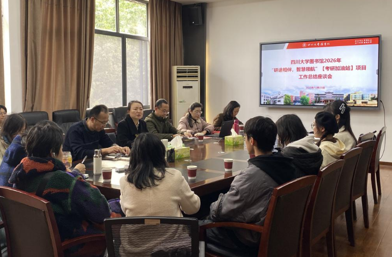

学院通知 · 科研创新
图书馆召开“研途相伴 智慧领航”考研加油站服务项目总结座谈会
发布时间：2025-12-27 00:00:00
秋深冬来时，笔耕不辍处。为进一步提升图书馆服务水平，切实满足本科学生考研学习需求，推动图书馆服务与育人工作深度融合，12月25日，图书馆在工学馆五楼会议室召开2026年“研途相伴· 智慧领航”考研加油站服务项目总结座谈会。图书馆馆长兰利琼，党委副书记兼纪委书记、副馆长杜小军，副馆长李锦清，相关部门负责人，“考研加油站”服务项目组成员和考研学生代表等参加会议。会议由兰利琼主持。 李锦清首先介绍了由图书馆和学校教育基金会共同开展的“考研加油站”服务项目的设立背景、目标定位和实施情况，以及该项目设立的“学习打卡站”“资源分享站”“能量补给站”“祝福许愿站”具体内容。同时充分肯定了与会老师为该项目开展所作出的艰辛努力和取得的突出成效，希望与会老师和同学们对该项目工作多提宝贵意见，为优化项目开展积极建言献策。 杜小军结合图书馆工作实际，介绍了图书馆为全校考研同学所提供的各项学习服务，并就服务工作征求了与会同学的意见。 与会同学分别结合自身备考经历，踊跃分享了参与“考研加油站”各项活动的体验与感受。同学们一致认为，“学习打卡站”通过自动记录与激励推送，不仅清晰刻画了奋斗足迹，也形成了持续的精神陪伴；“资源分享站”通过一站式备考数据库指引，提升了复习效率；“能量补给站”为考研同学在冲刺阶段及时送上暖心的小食品，提供了实实在在的支持；“祝福许愿站”成为舒缓压力、传递鼓励的情感园地，让备考之路不再孤单。同时，圆梦银杏作画、考研专属闭馆音乐等配套活动也赢得了同学们的广泛好评。同学们还从用户的角度，就活动宣传、资源整合、互动形式以及服务细节，提出了诸多富有建设性的意见和建议。与会师生在认真听取学生发言以后，围绕服务建议、项目开展、项目提升、未来规划等进行了深入的交流研讨。 座谈会上，馆领导为在“考研加油站“服务项目中获得“研途笃行奖”的学生代表颁发了荣誉证书与奖品。获奖同学纷纷表示，这份荣誉既是对个人学习的肯定，也承载着图书馆对考研同学的深厚关怀，将成为人生求学征程永恒的记忆。 兰利琼在总结时指出，“考研加油站”服务项目已发展成为图书馆服务育人体系中的一个重要品牌，它不仅仅是为考研学子提供物资上的支持，更是通过系统化、模块化的服务设计，将学校和图书馆的关怀、馆藏资源的专业支撑与持续的情感陪伴，有机融入到同学们辛苦的考研学习过程中。这一实践也深刻体现了图书馆“主动对接、深度嵌入，精准服务”的工作理念。她表示，在四川大学教育基金会的大力支持下，“考研加油站”服务项目的顺利推进与持续优化，离不开各位老师的紧密协作和同学们的热情参与。在本次座谈会中收集到的反馈与建设性意见，为以后项目的持续深入开展提供了重要支撑。图书馆将继续以考研同学需求为导向，坚持“智慧陪伴”的服务内涵，不断优化丰富项目服务内容，努力将其打造为更有温度、更具智慧、更受欢迎的育人品牌，持续探索“面向未来学习的智慧图书馆”建设与育人实践深度融合的创新路径与长效机制。
